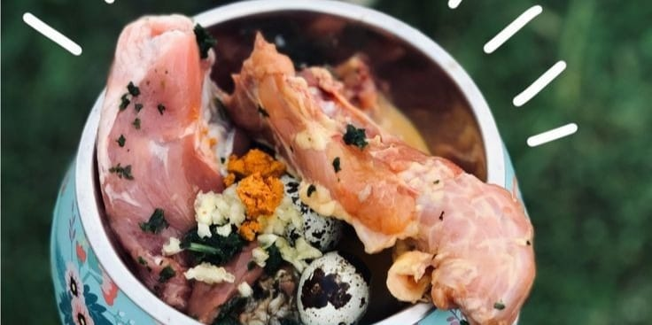

Pet Care

"¡Bienvenidos a nuestra página web dedicada a promover la alimentación natural para perros y gatos! En este espacio, exploraremos los beneficios de proporcionarles una dieta basada en ingredientes naturales y frescos.
Nuestro objetivo es ayudarte a comprender por qué la comida natural puede mejorar la salud y el bienestar de tus queridas mascotas. ¡Acompáñanos en este viaje hacia una alimentación más saludable y equilibrada para tus perros y gatos!"